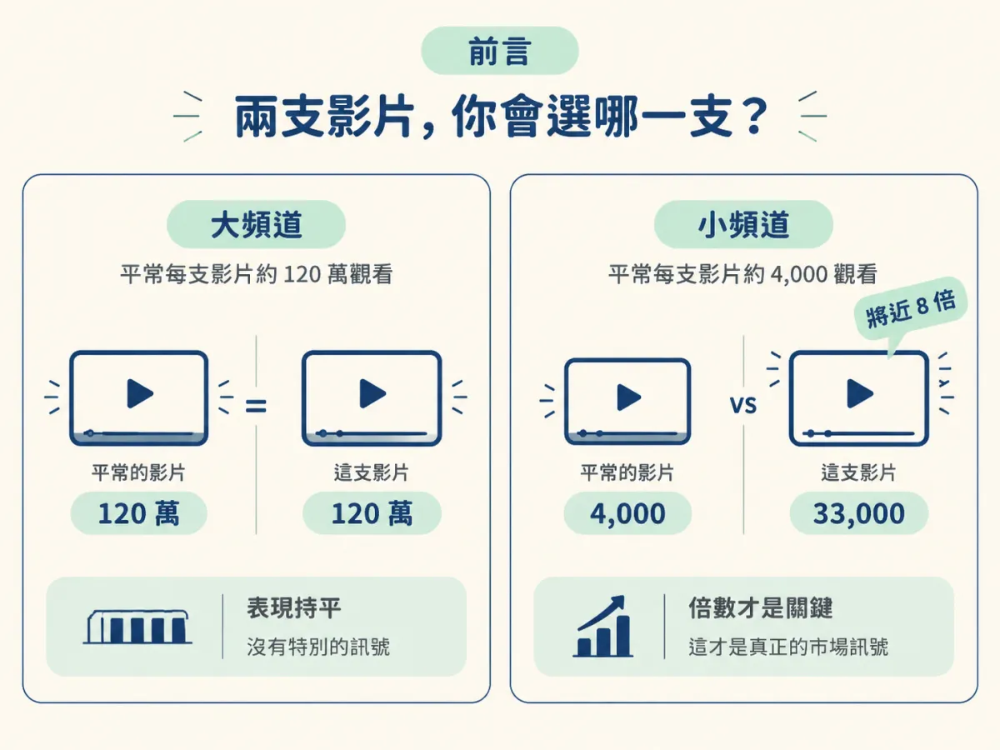

你在為這週的內容找題材，手上出現兩個連結。一個是 120 萬觀看的大頻道影片，另一個是 33,000 觀看的小頻道影片。多數人會毫不猶豫點開前者，因為直覺告訴我們，觀看數就是一切。
可是這個直覺會把你帶偏。如果那個 120 萬觀看的頻道，平常每一支影片就有 120 萬，那支影片什麼都沒證明——它只是照常發揮。反過來，33,000 那支如果來自一個平常只有 4,000 觀看的頻道，它其實是將近八倍的異常，那才是真正帶著市場訊號的東西。

這一節要把你判斷「爆款」的尺換掉：不再問「這支影片有幾萬觀看」，而是問「它有沒有打敗這個帳號的平常水準」。這把尺換過來之後，小創作者才找得到自己真的追得上的題材。
能用「這支影片相對這個帳號平常水準是幾倍」來判斷一支影片是不是 outlier，而不是看它的絕對觀看數。
上一個節點的 /latest 回答的是「現在大家都在聊什麼」，它給你新鮮度。課程把 outliers 列為第二個已被驗證的點子來源，它回答的是另一個問題：「什麼題材真的有效」。它的定義只有一句話：outlier 就是打敗自己平常水準的貼文，英文說法是 posts that beat their normal。
課程特別點出一個普遍的誤解：跟多數人想的不一樣，一個 outlier 其實不需要很大的觀看數。判斷的基準是帳號自己的日常，不是整個平台的平均。所以「觀看數不到幾十萬就不算爆款」這個想法，從一開始就站不住腳。
課程開場用的是一個小頻道的例子。Morin 的頻道在錄影當下大約有 6,000 個訂閱，平常每支影片的觀看數落在 4,000 左右。他有一支影片拿到 33,000 觀看——以絕對數字來說，多數人不會把它當成 outlier，因為沒到幾十萬的等級。但換成相對的看法，這支影片幾乎是平常水準的八倍，是很清楚的訊號：他在這支影片裡談的題目確實有意思，因為它觸及了比平常多很多的人。
接著課程把鏡頭轉向大創作者，證明這把尺不是只給小頻道用的。Chris Williamson 是 podcast 圈的大頻道，平常一支影片大約 50 萬觀看：
| 案例 | 平常水準 | 這支影片 | 倍數 | 算不算 outlier |
|---|---|---|---|---|
| Morin（約 6,000 訂閱） | 約 4,000 | 33,000 | 將近 8 倍 | 算，題目明顯打動了更多人 |
| Chris Williamson | 約 50 萬 | 50 萬 | 1 倍 | 不算，雖然絕對數字很大 |
| Chris Williamson | 約 50 萬 | 100 萬 | 2 倍 | 算，這才是他的異常 |
從這張表可以看出一件事：50 萬觀看聽起來比 33,000 大得多，但對 Chris 來說那只是日常；而 33,000 對 Morin 來說卻是八倍的突破。絕對數字跨帳號根本沒辦法比，倍數才可以。
你可以把這個觀念想成學校看「進步幅度」而不是「分數」。一個平常考 60 分的學生這次考 95，跟一個平常考 95 的學生又考 95，兩張同樣是 95 分的考卷，意義完全不同：前者是一個值得追問的訊號——他這次用了什麼方法？後者只是穩定發揮，沒有新資訊。
影片的觀看數也一樣。每個頻道有自己的體量，訂閱數、主題、更新頻率都會影響日常水準。用倍數來比，等於把每個頻道拉回自己的基準線上看：這支影片有沒有讓這個帳號「超乎平常」。如果有，代表這個題目在這個觀眾群裡被證明有效，這正是你在找題材時最需要的證據。
這裡要把邊界說清楚，免得把這個觀念用過頭。八倍的倍數證明的是「這個題目打動了比平常更多的人」，它不證明這支影片拍得多好，也不保證你照著做就會爆。它的用途是回答「值不值得我花時間研究」，而不是「照抄就能成功」。
還有一種情況要小心：單一支爆紅影片本身可能只是運氣。真正穩的訊號，是同一個模式在不同帳號上重複出現。這件事後面會變成挑選題材的核心判斷，這裡先記住：倍數幫你把候選找出來，判斷才決定哪個能用。
Outlier 是打敗自己平常水準的貼文，判斷靠的是相對倍數，不是絕對觀看數：33,000 對一個平常 4,000 的頻道是將近八倍的異常，而 50 萬對一個平常就 50 萬的頻道什麼都不是。倍數把每個帳號拉回自己的基準線，小創作者也因此找得到自己追得上的題材。
把這個觀念掛回你已經有的點子來源：你自己的想法最重要，/latest 給你新鮮度，outliers 則帶著「已被市場證明有效」的證據進來。接下來的問題是，這個「幾倍」到底怎麼算，才能跨帳號比較？下一步拆開倍數的算法，並比較 vidIQ 與 /outliers 兩種取得方式。